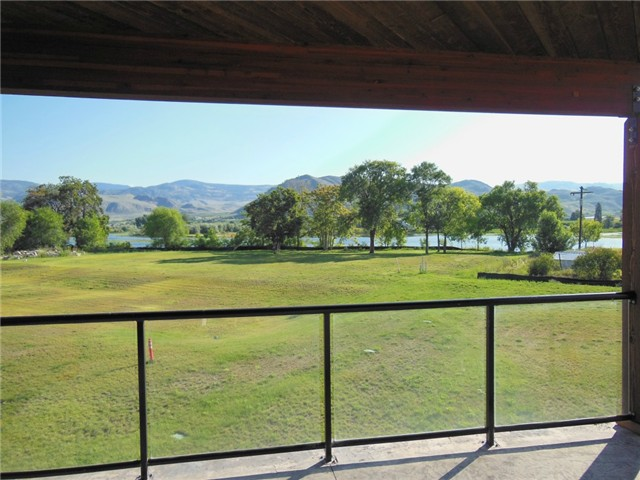
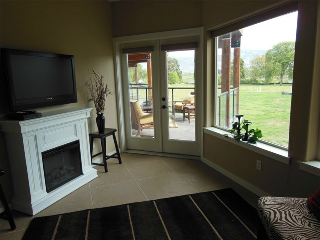

Romantic Waterfront Condos in heart of downtown Oroville. Be enchanted along the scenic paths to Lake Osoyoos and the Okanogan River. Watch the Bald Eagle and Osprey fish, the Blue Heron roost and the occasional group of White Pelicans preen. Greet your friends by boat at Sonora Shores private dock and head to the main Lake body for skiing, fishing, swimming and tootling. One and two bedroom upscale private homes with tall ceilings, granite, concrete stamps, heat pumps and designer Sonoran Desert soothing colors.
 Welcome to Oroville, WA
Oroville Washington is located 4 miles south of the Canadian Border on Highway 97. The green pastures and orchards of the valley floor contrast beautifully with the rugged cliffs and glacial features of the Okanogan country.
There are many activities available in our area including camping, fishing, boating and a variety of water sports. During the winter months there are a multitude of snow sports to partake in. In our surrounding area there is hiking, biking and horseback trails, such as the Similkameen Trail, Whistler Canyon Trail and plenty of ATV trails. In addition , there are museums to visit, local wineries for wine tasting, and of course, a scenic 18-hole golf course.